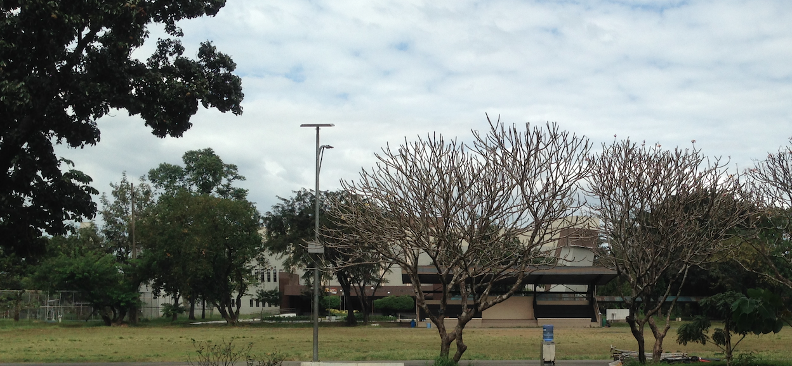
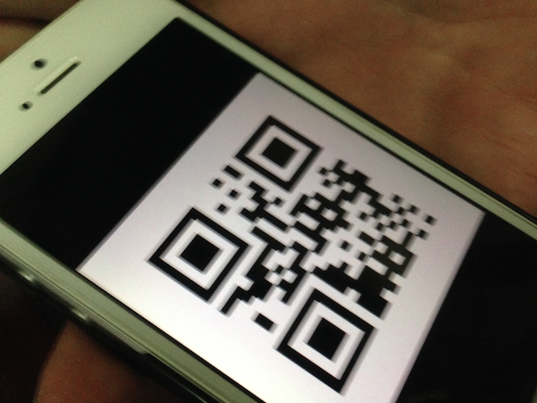
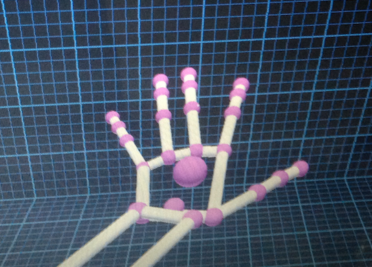
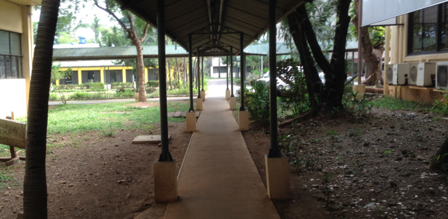
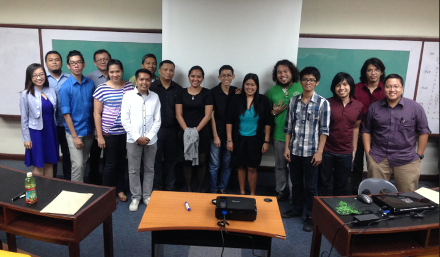

PSHS Diliman YMSAT 2015 Research Competition
A couple of weeks ago, I got invited to be one of the judges in Pisay's Research Competition during the 2015 Youth Math Science and Technology Festival. Of course, I accepted the invite since it would be nice to to see Pisay (Philippine Science) again and see how the scholars of the current generation are doing so far.

To be honest, I am amazed that some of the IT research projects now are harder to build than most college research projects. Some of the Pisay students already knew SQL, mobile app development, and web development. I knew these cool kids have a great future ahead.
Judging Experience
The day started with an orientation of how the entire day will look like. We got to see the titles and abstracts of the research papers during the orientation. Each of us had to judge around 15 research projects. The scores we give them would directly affect their final grades as students.

After the orientation, I visited the booths and judged the 15 research projects assigned to me. I asked all the teams the same question, "What problems did you encounter during the execution step?". Most of them answered that they encountered something they never expected and they needed more time since the problems caused delays. I also got to see some teams unable to complete their projects since they had problems using a new technology not taught at Pisay.

There were also amazing projects which had been planned and executed properly. Finally, there were also great ideas that could actually compete in Startup competitions.
KISS: Keep It Simple Student
When I received the list of research projects, I was initially surprised that some of the projects can be completed in a week. I thought that the some of the teams were trying to take the easy way out. I marked the "hard" projects and the "easy" projects so I could reward the "hard" projects with higher innovation scores later.
After judging the first 7 presentations, I noticed that most of the "hard" projects were not finished on time and several major features were missing. On the other hand, most of the "easy" projects were properly executed and had results. The "hard" projects were really innovative but due to the lack of time and the size of the scope, they weren't executed properly and thus got lower scores due to the lack of results.

I guess what happens in the real world happens to relatively smaller projects as well. One of the proven solutions is to start small and finish a Minimum Viable Product first before adding the extra features. The goal is to try to walk a straight line until the immediate finish line so the team has initial data and feedback.
With this technique, the team would have iterations building on top of the results of the past iterations. In case problems arise and time runs out, the team still has a working product.
Pisay Team of Judges
After 6 - 7 hours of presentations and deliberations, the results came out and the winners were determined. I got to see the other judges in action. I am honored to be part of the team of judges since most were veterans and experts of their own fields.

I felt like I was part of Justice League or some elite group. I am not an expert (yet) but I know it's a good start to a great career.